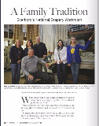
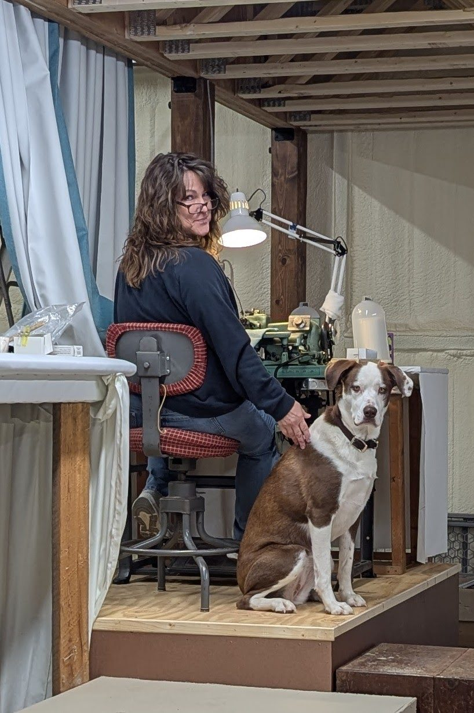
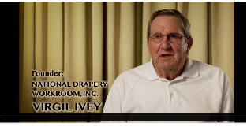

WV South Magazine · Dec. 2017–Jan. 2018
A family tradition
Read the National Drapery feature in the December 2017–January 2018 issue of WV South Magazine.
Read the article (PDF)Imagination, made tangible
A custom workroom to the trade, bringing designers’ window treatments to life for over 54 years.
Explore our craft Have a project in mind?

Made to your imagination
National Drapery is a custom workroom to the trade. We work with the design industry to create custom draperies and handcrafted top treatments to your specifications.
Get to know our workroomA look at our work

Our story, still unfolding
From Virgil and Geneva “Sissy” Ivey to the next generation, Leon and Jennifer Ivey, National Drapery’s story is woven into West Virginia.
It is a story of ingenuity, a return home in 1971, and a dedication to quality handcrafted, custom products.
Follow the threadFrom the National Drapery archives

WV South Magazine · Dec. 2017–Jan. 2018
Read the National Drapery feature in the December 2017–January 2018 issue of WV South Magazine.
Read the article (PDF)
In Virgil’s words
Hear Virgil Ivey talk about what brought him home in 1971 to manufacture custom draperies in the New River Scarbro Coal Company Store—a building that felt made for his process.
After 50+ years in the building, National Drapery continues in a new location. Special thanks to all involved, especially Michael Ivey for pulling it all together.
Watch the video on YouTubeFrom your imagination to our workroom
Contact us for more information or an estimate.